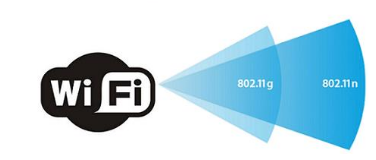
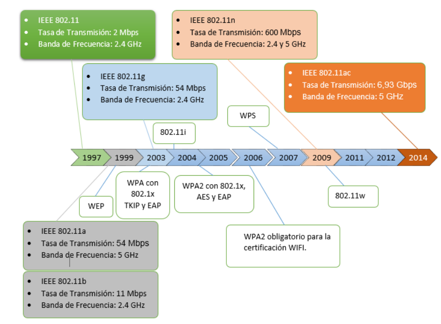
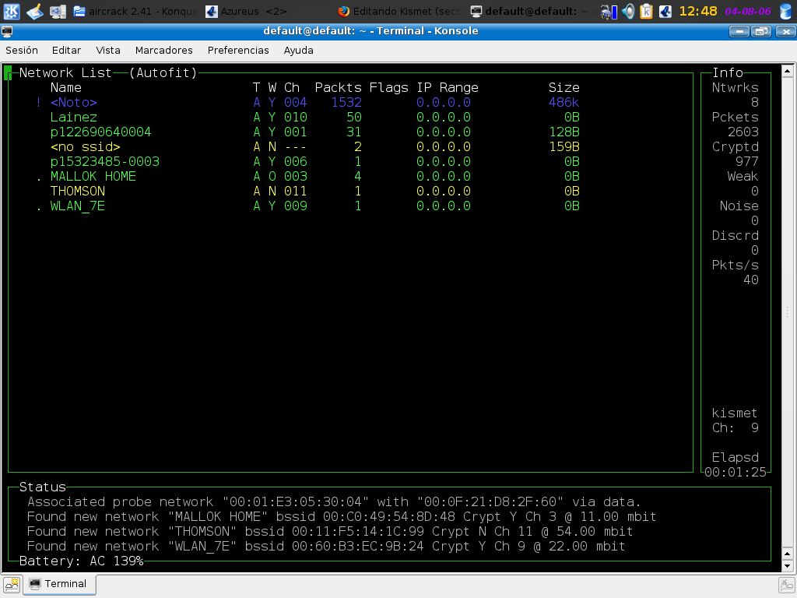

2. Protocolos de seguridad inalámbrica
1. Introducción
En este capítulo se describen los protocolos de seguridad inalámbrica que se pueden configurar para evitar que los intrusos puedan llegar a conectarse a nuestra red y cuál sería el más óptimo para la misma. Estos protocolos hasta la fecha son: WEP, WPS, WPA, WPA2 y WPA3.
A modo de resumen, decir que:
- WEP es algo que no se debería utilizar, ya que no cumple los estándares para la protección de las redes inalámbricas.
- En el método de WPA la llave de encriptación va cambiando en cada trama usando TKIP. Este protocolo permite que la clave cambie constantemente trama por trama y este automáticamente sincronizado entre el Punto de Acceso y el cliente wireless, lo que daba a desconexiones periódicas, pero si tenemos una buena configuración se podría usar este protocolo junto a WPA2.
- El protocolo WPA2 tiene algunas vulnerabilidades, que son corregidas con el WPA3. La alianza WiFi propone mover la industria lejos del WPA2.
- WPA3 mejora enormemente la seguridad de las redes personales (PSK), pero es más flojo en cuanto al sector empresarial.

2. Estándares IEEE 802.11, extensiones y mecanismos de seguridad en redes WLAN

Figura 1. Estándares IEEE 802.11, extensiones y mecanismos de seguridad en redes WLAN.
3. Entendiendo la autenticación
La tecnología inalámbrica trae nuevos riesgos de seguridad a una red, la autenticación, donde hay que establecer que un usuario es auténtico para autorizar el uso de la red, pero si la autenticación falla, cualquier persona dentro del alcance de la radio puede usar la red.
El estándar 802.11 define el proceso de autenticación y autorización de usuarios en una WLAN.
4. Wardriving
Los ciberdelincuentes usan wardriving para encontrar puntos de acceso inseguros usando un equipo portátil o de bolsillo.
El Wardriving no es ilegal pero usar los recursos de estas redes sin permisos es ilegal. Existe una variante llamada Warflying donde se usa un avión en lugar de un automóvil.
Otro producto para realizar ataques de Wardriving y que funciona en PDA Linux, BSD, MAC OS X y Linux es Kismet, donde tiene la capacidad de rastrear el tráfico 802.11b, 802.11a, 802.11g, 802.11n y 802.11ac.

{kind=link}
Obra publicada con Licencia Creative Commons Reconocimiento No comercial Compartir igual 4.0